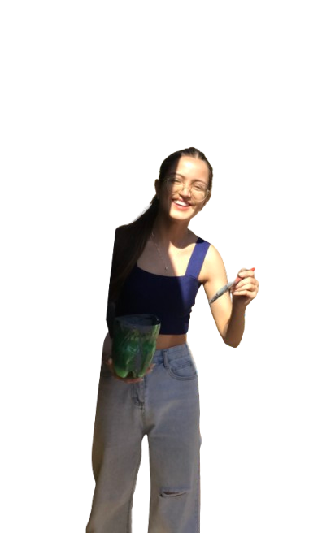

Meu "quando eu crescer"
Desde pequena, eu sempre tive uma resposta para a pergunta “o que você quer ser quando crescer?”. Durante muitos anos, essa resposta foi: arquiteta. Meu interesse pela arquitetura surgiu da admiração por projetos diferentes, casas marcantes e pela ideia de transformar desenhos em algo real.
E assim foi. Do ensino fundamental até o primeiro ano da faculdade de Arquitetura, eu realmente acreditava que aquele era o caminho que queria seguir. Mas havia um detalhe importante sobre mim: desde pequena, eu também sempre amei matemática, física, jogos e qualquer coisa que envolvesse raciocínio lógico.
ARQUITETURA
No curso, vivi momentos muito importantes e conheci pessoas incríveis que levo comigo até hoje. Eu gostava do curso, mas, com o passar do tempo, comecei a perceber que não me identificava de verdade com a profissão. Aos poucos, já não conseguia mais me imaginar atuando naquela área e sentia que, em algum lugar, ainda faltava encontrar aquilo que realmente fazia sentido para mim.

O começo de uma nova direção
Sempre fui muito curiosa, e foi justamente essa curiosidade que me trouxe até aqui. Um dia apareceu para mim um vídeo com uma piada sobre lógica de programação. Eu não entendi, mas fui pesquisar o significado e ali nasceu minha curiosidade pela programação.
Comecei a pesquisar sobre por onde estudar e, nesse processo, conheci o grande Gustavo Guanabara. Fiz meu primeiro curso, depois o segundo, depois o terceiro… e eu simplesmente amava aquilo. Gostava de entender como as coisas funcionavam, resolver problemas e ver tudo se encaixando.
Quanto mais eu aprendia e conversava com pessoas da área, mais tinha certeza de que era aquilo que eu queria.
Até que um dia falei para os meus pais:
“mãe, pai… eu quero seguir na área de TI.”
E foi ali que minha jornada na tecnologia realmente começou.
Da curiosidade à certeza
Em 2025, me mudei de cidade para começar minha graduação em Engenharia de Software. Desde então, tenho cada vez mais certeza de que fiz a escolha certa.
Continuei me dedicando aos estudos, fazendo cursos e aproveitando ao máximo tudo que a faculdade tem me proporcionado. Ao longo dessa jornada, tenho conhecido professores incríveis, participado de eventos e vivido momentos muito especiais, como a oportunidade de conhecer pessoalmente o Gustavo Guanabara, que foi o primeiro professor de programação para mim e também para muitas pessoas da área.